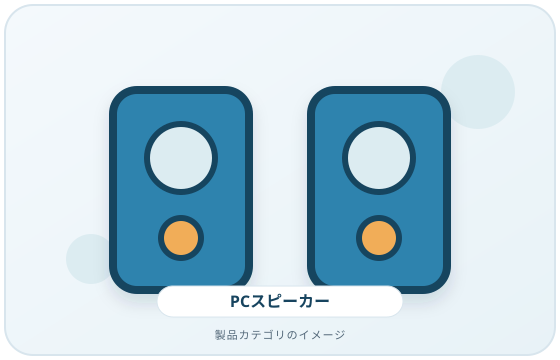
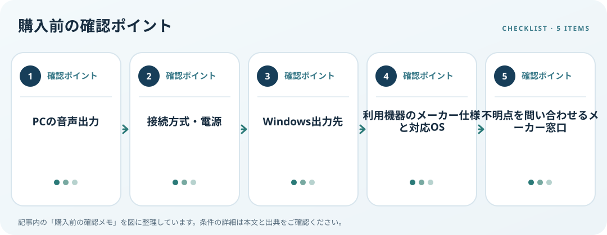

PCスピーカーは音量や見た目だけでなく、PCとの接続方式と電源条件から選びます。3.5mm音声端子、USB、Bluetoothなどで必要な端子や設定が異なります。Windowsでは複数の出力先があるとき、利用するスピーカーを選択する必要があるとMicrosoftは説明しています。
画像・ボタンはAmazonアソシエイトリンクです。適格購入により紹介料を得る場合があります。

Amazon.co.jpで「PC スピーカー USB」を探す ↗

対応条件を仕様で確認
PCの仕様書を見て、3.5mm音声出力、USB-A／USB-C、Bluetoothのどれを使えるか確認します。USB製品は音声と給電を同じケーブルで扱う場合や、別電源を必要とする場合があります。BluetoothならPC側の対応とペアリング方法も調べます。
利用環境・設置条件を確認
コンセントが必要かUSB給電か、左右スピーカーの幅・高さ、モニター脚との干渉、ケーブル長、音量調整位置を確認します。Windowsの「設定」「システム」「サウンド」の出力先で適切な機器を選べることもチェックします。会議アプリなどに独自の出力設定がある場合は、その設定も確認してください。
購入前の確認メモ
- PCの音声出力
- 接続方式・電源
- Windows出力先
- 利用機器のメーカー仕様と対応OS
- 不明点を問い合わせるメーカー窓口
記事は出典の公開情報を確認手順に整理したもので、製品の使用・実測・ランキング・価格・在庫の調査は行っていません。購入時には各メーカーの最新情報をご確認ください。
出典
- Fix audio issues when no sound plays from speakers or headphones in Windows — Microsoft Support（確認日: 2026-10-10）
- Bluetooth Specifications — Bluetooth SIG（確認日: 2026-10-10）